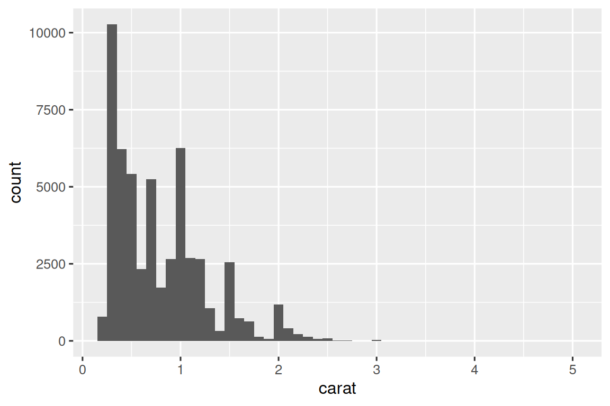
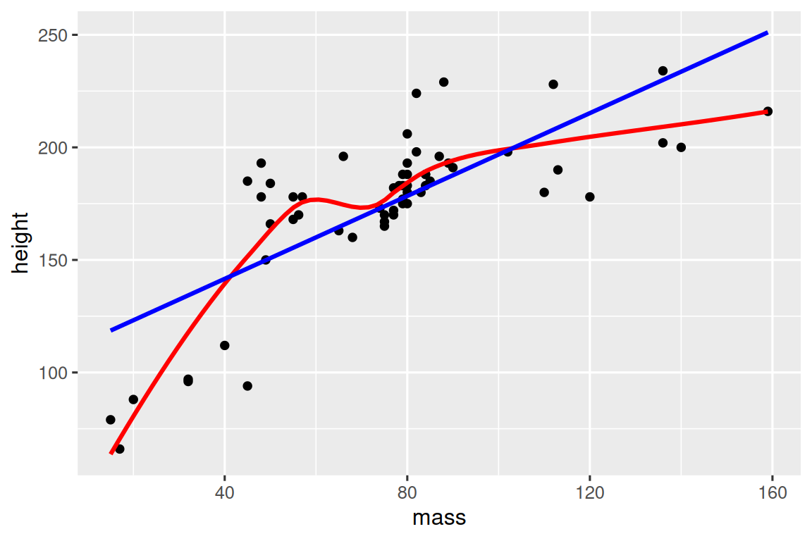
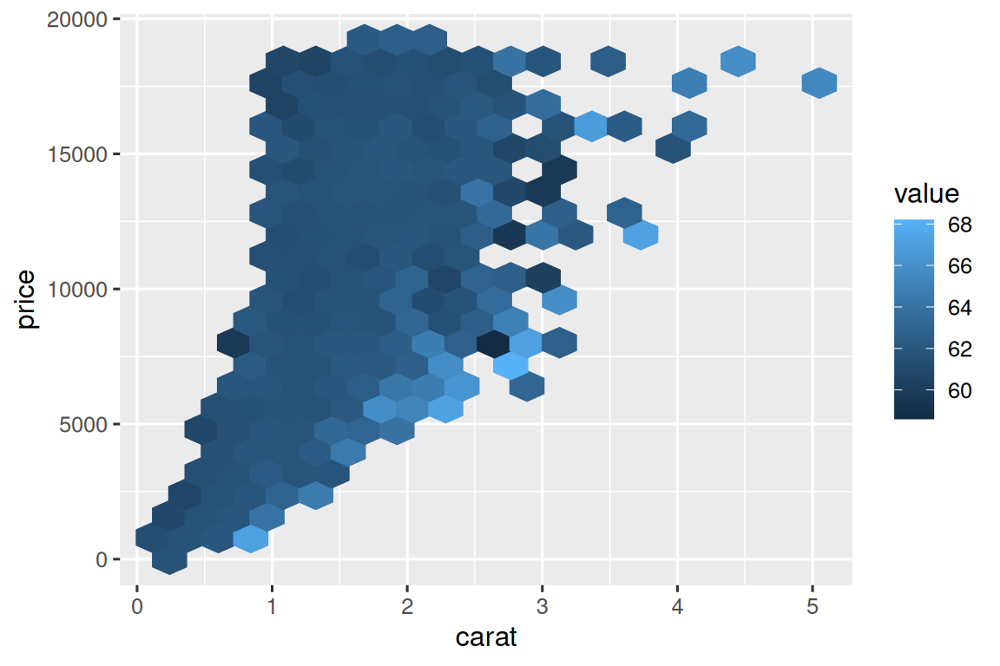
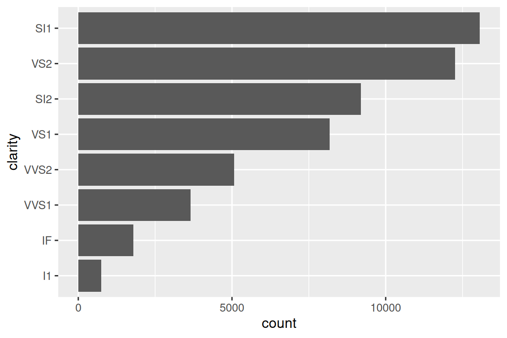
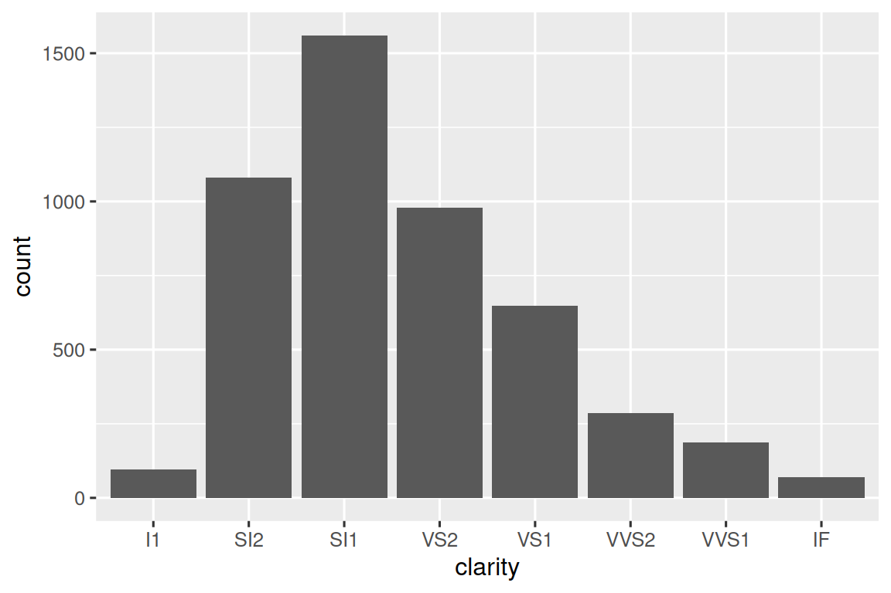
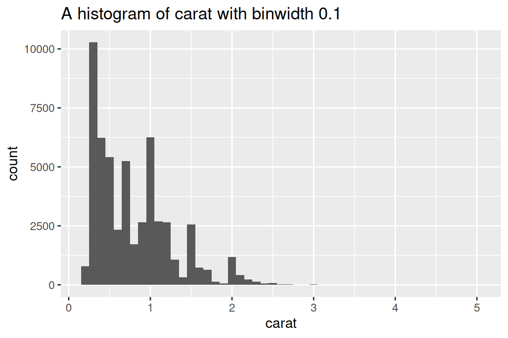

library(tidyverse)
library(nycflights13)함수
데이터 과학자로서 여러분의 도달 범위(reach)를 넓히는(improve) 좋은 방법 중 하나는 함수(functions)를 작성하는 것입니다. 함수를 사용하면(allow you to) 복사 및 붙여넣기(copy-and-pasting)보다 더 강력(powerful)하고 일반적인(general) 방법으로 일반적인 작업(common tasks)을 자동화(automate)할 수 있습니다. 함수를 작성하면 복사 및 붙여넣기를 사용하는 것에 비해 4가지 큰 이점(advantages)이 있습니다.
- 함수에 연상되는(evocative) 이름을 부여(give)하여 코드를 더 쉽게(easier) 이해할 수 있습니다.
- 요구 사항(requirements)이 변경될 때(change) 여러 곳(many)이 아닌 한 곳(one place)에서만 코드를 업데이트(update)하면 됩니다.
- 복사 및 붙여넣기할 때 발생하는 우발적인 실수(incidental mistakes)(한 곳에서는 변수 이름을 업데이트하지만 다른 곳에서는 업데이트하지 않는 경우)의 가능성(chance)을 제거(eliminate)할 수 있습니다.
- 프로젝트 간(from project-to-project)에 작업(work)을 더 쉽게 재사용(reuse)할 수 있어 시간이 지남에 따라(over time) 생산성(productivity)이 향상됩니다(increasing).
좋은 경험 법칙(rule of thumb)은 코드 블록을 두 번 이상(more than twice) 복사하여 붙여넣은 경우(즉, 동일한 코드의 사본(copies)이 세 개 있는 경우) 함수 작성을 고려(consider)하는 것입니다.
1 벡터 함수
하나 이상의 벡터를 받아(take) 벡터 결과(result)를 반환하는 함수인 벡터 함수부터 시작하겠습니다. 예를 들어 다음 코드를 살펴보겠습니다(take a look at). 이것은 무엇을 하나요(What does it do)?
df <- tibble(
a = rnorm(5),
b = rnorm(5),
c = rnorm(5),
d = rnorm(5),
)
df |> mutate(
a = (a - min(a, na.rm = TRUE)) /
(max(a, na.rm = TRUE) - min(a, na.rm = TRUE)),
b = (b - min(a, na.rm = TRUE)) /
(max(b, na.rm = TRUE) - min(b, na.rm = TRUE)),
c = (c - min(c, na.rm = TRUE)) /
(max(c, na.rm = TRUE) - min(c, na.rm = TRUE)),
d = (d - min(d, na.rm = TRUE)) /
(max(d, na.rm = TRUE) - min(d, na.rm = TRUE)),
)
#> # A tibble: 5 × 4
#> a b c d
#> <dbl> <dbl> <dbl> <dbl>
#> 1 0.339 0.387 0.291 0
#> 2 0.880 -0.613 0.611 0.557
#> 3 0 -0.0833 1 0.752
#> 4 0.795 -0.0822 0 1
#> 5 1 -0.0952 0.580 0.394이 코드가 각 열의 범위(range)를 0에서 1까지 갖도록 크기를 조정(rescales)한다는 것을 알아낼(puzzle out) 수 있을 것입니다. 하지만 실수를 발견(spot)하셨나요? Hadley가 이 코드를 작성할 때 복사 및 붙여넣기를 하다가 오류(error)를 범했고(made) a를 b로 변경하는 것을 잊었습니다(forgot). 이러한 유형의 실수를 방지하는(Preventing) 것은 함수 작성 방법을 배우는 한 가지 매우 좋은 이유입니다.
1.1 함수 작성
함수를 작성하려면 먼저(first) 반복되는 코드를 분석(analyse)하여 어느 부분이 일정하고(constant) 어느 부분이 달라지는지(vary) 파악(figure what)해야 합니다. 위의 코드를 가져와서(take) mutate() 외부로 꺼내면(pull it outside of), 각 반복(repetition)이 이제 한 줄(one line)이므로 패턴(pattern)을 보기가 조금 더 쉽습니다.
(a - min(a, na.rm = TRUE)) / (max(a, na.rm = TRUE) - min(a, na.rm = TRUE))
(b - min(b, na.rm = TRUE)) / (max(b, na.rm = TRUE) - min(b, na.rm = TRUE))
(c - min(c, na.rm = TRUE)) / (max(c, na.rm = TRUE) - min(c, na.rm = TRUE))
(d - min(d, na.rm = TRUE)) / (max(d, na.rm = TRUE) - min(d, na.rm = TRUE)) 이것을 좀 더 명확하게(clearer) 하기 위해 변하는(varies) 부분을 █로 바꿀 수 있습니다(replace):
(█ - min(█, na.rm = TRUE)) / (max(█, na.rm = TRUE) - min(█, na.rm = TRUE))이것을 함수로 바꾸려면(turn this into) 세 가지가 필요합니다.
이름(name): 이 함수는 벡터의 크기를 0과 1 사이(lie between)에 놓이도록 조정(rescales)하므로 여기서는
rescale01을 사용하겠습니다.인수(arguments): 인수는 호출(calls)할 때마다 달라지는(vary across) 항목이며 위의 분석에 따르면 인수가 하나만 있다는 것을 알 수 있습니다. 숫자 벡터의 관례적인(conventional) 이름이므로 이것을
x라고 부르겠습니다.본문(body): 본문은 모든 호출에서 반복되는 코드입니다.
그런 다음 템플릿(template)을 따라 함수 시생성합니다.
name <- function(arguments) {
body
}이 경우에는 다음과 같이 됩니다(leads to).
rescale01 <- function(x) {
(x - min(x, na.rm = TRUE)) / (max(x, na.rm = TRUE) - min(x, na.rm = TRUE))
}이 시점(point)에서 논리(logic)를 올바르게(correctly) 캡처(captured)했는지 확인(make sure)하기 위해 몇 가지 간단한 입력으로 테스트(test)해 볼 수 있습니다.
rescale01(c(-10, 0, 10))
#> [1] 0.0 0.5 1.0
rescale01(c(1, 2, 3, NA, 5))
#> [1] 0.00 0.25 0.50 NA 1.00그런 다음 mutate() 호출을 다음과 같이 다시 작성(rewrite)할 수 있습니다.
df |> mutate(
a = rescale01(a),
b = rescale01(b),
c = rescale01(c),
d = rescale01(d),
)
#> # A tibble: 5 × 4
#> a b c d
#> <dbl> <dbl> <dbl> <dbl>
#> 1 0.339 1 0.291 0
#> 2 0.880 0 0.611 0.557
#> 3 0 0.530 1 0.752
#> 4 0.795 0.531 0 1
#> 5 1 0.518 0.580 0.394중복(duplication)을 더욱(even further) 줄이기 위해(reduce) across()를 사용하는 방법을 배우게 되므로 df |> mutate(across(a:d, rescale01))만 필요합니다.
1.2 함수 개선
rescale01() 함수가 불필요한 작업(unnecessary work)을 수행(does)한다는 것을 눈치챘을(notice) 수 있습니다. min()을 두 번, max()를 한 번 계산하는 대신(instead of computing) range()를 사용하여 한 단계(one step)로 최소값과 최대값을 모두 계산할 수 있습니다(could instead compute).
rescale01 <- function(x) {
rng <- range(x, na.rm = TRUE)
(x - rng[1]) / (rng[2] - rng[1])
}또는 무한한(infinite) 값을 포함하는 벡터에 이 함수를 시도해 볼 수도 있습니다(might try).
x <- c(1:10, Inf)
rescale01(x)
#> [1] 0 0 0 0 0 0 0 0 0 0 NaN해당 결과는 특별히 유용하지 않으므로(not particularly useful) range()에 무한한 값을 무시(ignore)하도록 요청(ask)할 수 있습니다.
rescale01 <- function(x) {
rng <- range(x, na.rm = TRUE, finite = TRUE)
(x - rng[1]) / (rng[2] - rng[1])
}
rescale01(x)
#> [1] 0.0000000 0.1111111 0.2222222 0.3333333 0.4444444 0.5555556 0.6666667
#> [8] 0.7777778 0.8888889 1.0000000 Inf이러한 변경(changes)은 함수의 중요한 이점(benefit)을 보여줍니다(illustrate): 반복되는 코드를 함수로 옮겼기(moved) 때문에(because) 한 곳(one place)에서만 변경(make the change)하면 됩니다.
1.3 변이 함수
이제 함수의 기본 개념(basic idea)을 이해했으므로 수많은(a whole bunch of) 예제를 살펴보겠습니다. 먼저 “변이(mutate)” 함수, 즉 입력과 동일한 길이의 출력을 반환하므로 mutate() 및 filter() 내부(inside of)에서 잘 작동하는 함수를 살펴보는 것으로 시작하겠습니다(start by).
rescale01()의 간단한 변형(variation)부터 시작하겠습니다. 평균이 0이고 표준 편차(standard deviation)가 1이 되도록 벡터의 크기를 조정하는(rescaling) Z-점수(Z-score)를 계산(compute)하고 싶을 수 있습니다.
z_score <- function(x) {
(x - mean(x, na.rm = TRUE)) / sd(x, na.rm = TRUE)
}또는 간단한(straightforward) case_when()을 정리(wrap up)하고 유용한 이름을 지정(give)하고 싶을 수도 있습니다. 예를 들어 이 clamp() 함수는 벡터의 모든 값이 최소값 또는 최대값 사이(in between)에 있도록 보장(ensures)합니다.
clamp <- function(x, min, max) {
case_when(
x < min ~ min,
x > max ~ max,
.default = x
)
}
clamp(1:10, min = 3, max = 7)
#> [1] 3 3 3 4 5 6 7 7 7 7물론 함수가 숫자 변수에서만 작동(work with)해야 하는 것은 아닙니다(don’t just need to). 반복적인 문자열 조작(string manipulation)을 수행하고 싶을 수 있습니다. 첫 글자(character)를 대문자(uppercase)로 만들어야 할 수도 있습니다(Maybe you need to).
first_upper <- function(x) {
str_sub(x, 1, 1) <- str_to_upper(str_sub(x, 1, 1))
x
}
first_upper("hello")
#> [1] "Hello"또는 숫자로 변환(converting it into a number)하기 전에 문자열에서 퍼센트 기호(percent signs), 쉼표(commas) 및 달러 기호(dollar signs)를 제거(strip)하고 싶을 수 있습니다.
# https://twitter.com/NVlabormarket/status/1571939851922198530
clean_number <- function(x) {
is_pct <- str_detect(x, "%")
num <- x |>
str_remove_all("%") |>
str_remove_all(",") |>
str_remove_all(fixed("$")) |>
as.numeric()
if_else(is_pct, num / 100, num)
}
clean_number("$12,300")
#> [1] 12300
clean_number("45%")
#> [1] 0.45때로는 함수가 하나의 데이터 분석 단계(step)에 매우 특화(highly specialized)되어 있을 수 있습니다. 예를 들어 결측값을 997, 998 또는 999로 기록(record)하는 변수가 여러 개(a bunch of) 있는 경우 이를 NA로 대체(replace)하는 함수를 작성하고 싶을 수 있습니다.
fix_na <- function(x) {
if_else(x %in% c(997, 998, 999), NA, x)
}우리는 단일 벡터를 사용하는(take) 예제에 초점을 맞췄습니다. 왜냐하면 그것들이 일반적(common)이라고 생각하기 때문입니다. 하지만(But) 함수가 여러(multiple) 벡터 입력을 받을 수 없는 이유는 없습니다(there’s no reason that).
1.4 요약 함수
벡터 함수의 또 다른(Another) 중요한 제품군(family)은 summarize()에 사용(use in)할 단일 값을 반환하는 요약(summary) 함수입니다. 때로는 기본(default) 인수를 하나 또는 두 개 설정하는(setting) 문제일 수 있습니다.
commas <- function(x) {
str_flatten(x, collapse = ", ", last = " and ")
}
commas(c("cat", "dog", "pigeon"))
#> [1] "cat, dog and pigeon"또는 표준 편차를 평균으로 나누는 변동 계수(coefficient of variation)와 같이(like for) 간단한 계산(computation)을 정리(wrap up)할 수도 있습니다.
cv <- function(x, na.rm = FALSE) {
sd(x, na.rm = na.rm) / mean(x, na.rm = na.rm)
}
cv(runif(100, min = 0, max = 50))
#> [1] 0.5196276
cv(runif(100, min = 0, max = 500))
#> [1] 0.5652554또는 기억하기 쉬운(memorable) 이름을 부여(giving)하여 일반적인 패턴(common pattern)을 더 기억하기(remember) 쉽게 만들고 싶을 수도 있습니다.
# https://twitter.com/gbganalyst/status/1571619641390252033
n_missing <- function(x) {
sum(is.na(x))
} 여러(multiple) 벡터 입력을 가진 함수를 작성할 수도 있습니다. 예를 들어, 모델 예측(model predictions)을 실제 값(actual values)과 비교(compare)하는 데 도움이 되도록 평균 절대 백분율 오차(mean absolute percentage error)를 계산하고(compute) 싶을 수 있습니다.
# https://twitter.com/neilgcurrie/status/1571607727255834625
mape <- function(actual, predicted) {
sum(abs((actual - predicted) / actual)) / length(actual)
}1.5 연습 문제 (Exercises)
- 다음 코드 조각(snippets)을 함수로 바꾸는 연습을 하세요. 각 함수가 무엇을 하는지 생각해 보세요. 어떻게 부르시겠습니까(What would you call it)? 몇 개의 인수(arguments)가 필요한가요?
mean(is.na(x))
mean(is.na(y))
mean(is.na(z))
x / sum(x, na.rm = TRUE)
y / sum(y, na.rm = TRUE)
z / sum(z, na.rm = TRUE)
round(x / sum(x, na.rm = TRUE) * 100, 1)
round(y / sum(y, na.rm = TRUE) * 100, 1)
round(z / sum(z, na.rm = TRUE) * 100, 1)rescale01()의 두 번째 변형(variant)에서는 무한한 값이 변경되지 않은 상태(unchanged)로 유지됩니다(are left).-Inf는 0에 매핑되고(mapped to)Inf는 1에 매핑되도록rescale01()을 다시 작성(rewrite)할 수 있나요?생년월일(birthdates) 벡터가 주어지면(Given), 연령(age in years)을 계산하는 함수를 작성하세요.
숫자 벡터의 분산(variance)과 왜도(skewness)를 계산하는 자체 함수를 작성하세요. 위키백과나 다른 곳(elsewhere)에서 정의를 찾아볼(look up) 수 있습니다.
동일한 길이의 두 벡터를 입력으로 받아 두 벡터 모두에
NA가 있는 위치(positions)의 개수를 반환하는 요약 함수both_na()를 작성하세요.설명서(documentation)를 읽고 다음 함수가 무엇을 하는지 파악하세요(figure out). 매우 짧은데도 유용한 이유는 무엇입니까?
is_directory <- function(x) {
file.info(x)$isdir
}
is_readable <- function(x) {
file.access(x, 4) == 0
}2 데이터 프레임 함수
벡터 함수는 dplyr 동사(verb) 내에서 반복되는 코드를 뽑아내는(pulling out) 데 유용합니다. 하지만 종종(often) 동사 자체(themselves)를 반복하는 경우도 있으며, 특히 대규모(large) 파이프라인(pipeline) 내에서 그렇습니다. 여러(multiple) 동사를 여러 번 복사하여 붙여넣고 있다는 것을 알게 되면(notice) 데이터 프레임 함수 작성을 고려(might think about)해 볼 수 있습니다. 데이터 프레임 함수는 dplyr 동사처럼 작동합니다. 첫 번째 인수로 데이터 프레임을, 그 데이터 프레임으로 무엇을 할지 알려주는 몇 가지 추가(extra) 인수를 받고 데이터 프레임이나 벡터를 반환합니다.
dplyr 동사를 사용하는 함수를 작성할 수 있도록 먼저 간접 참조(indirection)의 문제점(challenge)과 이를 껴안기(embracing, {{ }})를 사용하여 극복(overcome)하는 방법에 대해 소개하겠습니다(introduce). 이러한 이론을 숙지한(under your belt) 후에는 이를 사용하여 수행(might do)할 수 있는 작업을 보여주는(illustrate) 여러(a bunch of) 예제를 보여드리겠습니다(show you).
2.1 간접 참조 및 깔끔한 평가
dplyr 동사를 사용하는 함수를 작성하기 시작하면 간접 참조(indirection) 문제에 빠르게(rapidly) 부딪힙니다(hit). 매우 간단한 함수인 grouped_mean()을 통해 문제를 설명(illustrate)해 보겠습니다. 이 함수의 목표(goal)는 group_var로 그룹화된 mean_var의 평균을 계산하는 것입니다.
grouped_mean <- function(df, group_var, mean_var) {
df |>
group_by(group_var) |>
summarize(mean(mean_var))
}이것을 사용해 보려고 하면(try and use it) 오류가 발생합니다.
diamonds |> grouped_mean(cut, carat)
#> Error in `group_by()` at dplyr/R/summarise.R:113:3:
#> ! Must group by variables found in `.data`.
#> ✖ Column `group_var` is not found.문제를 조금 더 명확하게 하기 위해 가상(made up)의 데이터 프레임을 사용할 수 있습니다.
df <- tibble(
mean_var = 1,
group_var = "g",
group = 1,
x = 10,
y = 100
)
df |> grouped_mean(group, x)
#> # A tibble: 1 × 2
#> group_var `mean(mean_var)`
#> <chr> <dbl>
#> 1 g 1
df |> grouped_mean(group, y)
#> # A tibble: 1 × 2
#> group_var `mean(mean_var)`
#> <chr> <dbl>
#> 1 g 1우리가 어떻게 grouped_mean()을 호출(call)하든(Regardless of), df |> group_by(group) |> summarize(mean(x))나 df |> group_by(group) |> summarize(mean(y)) 대신(instead of) 항상 df |> group_by(group_var) |> summarize(mean(mean_var))를 수행합니다.
이것은 간접 참조의 문제이며, dplyr이 깔끔한 평가(tidy evaluation)를 사용하여(allow you to) 데이터 프레임 내부의 변수 이름을 특별한 처리(special treatment) 없이 참조(refer to)할 수 있도록 하기 때문에 발생(arises)합니다.
깔끔한 평가(Tidy evaluation)는 컨텍스트(context)에서 명백(obvious)하기 때문에 변수가 어느(which) 데이터 프레임에서 왔는지 말할 필요가(never have to say) 전혀 없어서(never) 데이터 분석을 매우 간결하게(concise) 만들어 주므로(makes) 95%의 경우(of the time) 훌륭(great)합니다.
깔끔한 평가의 단점(downside)은 반복되는 tidyverse 코드를 함수로 정리(wrap up)하려고 할 때 발생(comes)합니다. 여기서는 group_by()와 summarize()에게 group_var와 mean_var를 변수의 이름으로 처리(treat)하지 말고, 실제로(actually) 사용하려는(want to use) 변수를 위해 해당 변수 내부를 들여다보라고(look inside) 지시할(tell) 방법이 필요합니다.
깔끔한 평가는 이 문제에 대한 해결책으로 껴안기(embracing)라고 부르는 것을 포함(includes)합니다. 변수를 껴안는다는 것은(Embracing) 중괄호(braces)로 묶는(wrap) 것을 의미하므로 (예를 들어) var는 {{ var }}가 됩니다.
변수를 껴안으면 dplyr은 인수를 리터럴(literal) 변수 이름으로 사용하지 않고 인수 내부에 저장된(stored) 값을 사용하도록 지시(tells)합니다. 무슨 일이 일어나고 있는지 기억(remember)하는 한 가지 방법은 {{ }}를 터널 안을 들여다보는 것(looking down a tunnel)이라고 생각하는 것입니다. {{ var }}는 dplyr 함수가 var라는 이름의 변수를 찾기(looking for)보다 var 내부를 들여다보게(look inside of) 만듭니다(make).
따라서 grouped_mean()이 작동하도록 하려면 group_var와 mean_var를 {{ }}로 감싸야(surround) 합니다.
grouped_mean <- function(df, group_var, mean_var) {
df |>
group_by({{ group_var }}) |>
summarize(mean({{ mean_var }}))
}
df |> grouped_mean(group, x)
#> # A tibble: 1 × 2
#> group `mean(x)`
#> <dbl> <dbl>
#> 1 1 102.2 언제 껴안아야 할까요?
데이터 프레임 함수를 작성할 때 핵심적인 과제(key challenge)는 어떤 인수를 껴안아야 하는지 파악(figuring out)하는 것입니다. 다행히도(Fortunately) 설명서(documentation)에서 찾을(look it up) 수 있기 때문에 쉽습니다(easy). 깔끔한 평가의 두 가지 일반적인(most common) 하위 유형(sub-types)에 해당하는 문서에서 찾아볼 두 가지 용어(terms)가 있습니다.
데이터 마스킹(Data-masking): 이것은 변수를 사용해 계산하는(compute)
arrange(),filter(),summarize()와 같은 함수에서 사용됩니다.깔끔한 선택(Tidy-selection): 변수를 선택(select)하는
select(),relocate(),rename()과 같은 함수에 사용됩니다.
어떤 인수가 깔끔한 평가를 사용하는지에 대한 직관(intuition)은 많은 일반적인 함수에서 잘 맞을(good) 것입니다. 계산할(compute, 예: x + 1) 수 있는지 아니면 선택할(select, 예: a:x) 수 있는지만 생각(think about whether)해 보세요.
다음 섹션(sections)에서는 껴안기(embracing)를 이해(understand)한 후(once) 작성할(might write) 수 있는 유용한(handy) 종류의 함수(sorts of)를 살펴보겠습니다(explore).
2.3 일반적인 사용 사례
초기 데이터 탐색(initial data exploration)을 수행(doing)할 때 일반적으로(commonly) 동일한 일련의 요약(same set of summaries)을 수행(perform)하는 경우 이를 도우미 함수(helper function)로 묶는(wrapping) 것을 고려해 볼 수 있습니다.
summary6 <- function(data, var) {
data |> summarize(
min = min({{ var }}, na.rm = TRUE),
mean = mean({{ var }}, na.rm = TRUE),
median = median({{ var }}, na.rm = TRUE),
max = max({{ var }}, na.rm = TRUE),
n = n(),
n_miss = sum(is.na({{ var }})),
.groups = "drop"
)
}
diamonds |> summary6(carat)
#> # A tibble: 1 × 6
#> min mean median max n n_miss
#> <dbl> <dbl> <dbl> <dbl> <int> <int>
#> 1 0.2 0.798 0.7 5.01 53940 0(summarize()를 도우미 함수로 감쌀(wrap) 때마다(Whenever) 메시지를 피하고(avoid) 데이터를 그룹화되지 않은 상태(ungrouped state)로 두기 위해(leave) .groups = "drop"을 설정(set)하는 것이 좋은 관행(good practice)이라고 생각합니다.)
이 함수의 좋은 점(nice thing)은 summarize()를 래핑(wraps)하기 때문에 그룹화된(grouped) 데이터에 사용할 수 있다는(use it on) 것입니다.
diamonds |>
group_by(cut) |>
summary6(carat)
#> # A tibble: 5 × 7
#> cut min mean median max n n_miss
#> <ord> <dbl> <dbl> <dbl> <dbl> <int> <int>
#> 1 Fair 0.22 1.05 1 5.01 1610 0
#> 2 Good 0.23 0.849 0.82 3.01 4906 0
#> 3 Very Good 0.2 0.806 0.71 4 12082 0
#> 4 Premium 0.2 0.892 0.86 4.01 13791 0
#> 5 Ideal 0.2 0.703 0.54 3.5 21551 0게다가(Furthermore) summarize의 인수가 데이터 마스킹(data-masking)을 사용하므로(so is) summary6()의 var 인수도(so is) 마찬가지입니다. 즉(That means), 계산된(computed) 변수를 요약할(summarize) 수도 있습니다.
diamonds |>
group_by(cut) |>
summary6(log10(carat))
#> # A tibble: 5 × 7
#> cut min mean median max n n_miss
#> <ord> <dbl> <dbl> <dbl> <dbl> <int> <int>
#> 1 Fair -0.658 -0.0273 0 0.700 1610 0
#> 2 Good -0.638 -0.133 -0.0862 0.479 4906 0
#> 3 Very Good -0.699 -0.164 -0.149 0.602 12082 0
#> 4 Premium -0.699 -0.125 -0.0655 0.603 13791 0
#> 5 Ideal -0.699 -0.225 -0.268 0.544 21551 0여러 변수(multiple variables)를 요약하려면(To summarize) across() 사용 방법을 배우는 ?@sec-across까지 기다려야(wait) 합니다.
널리 사용되는(popular) 또 다른 summarize() 도우미 함수는 비율(proportions)도 계산하는 count() 버전(version)입니다.
# https://twitter.com/Diabb6/status/1571635146658402309
count_prop <- function(df, var, sort = FALSE) {
df |>
count({{ var }}, sort = sort) |>
mutate(prop = n / sum(n))
}
diamonds |> count_prop(clarity)
#> # A tibble: 8 × 3
#> clarity n prop
#> <ord> <int> <dbl>
#> 1 I1 741 0.0137
#> 2 SI2 9194 0.170
#> 3 SI1 13065 0.242
#> 4 VS2 12258 0.227
#> 5 VS1 8171 0.151
#> 6 VVS2 5066 0.0939
#> # ℹ 2 more rows이 함수에는 df, var, sort의 세 가지 인수가 있으며 모든 변수에 대해 데이터 마스킹을 사용하는 count()에 전달(passed)되기 때문에 var만 껴안아야(needs to be embraced) 합니다. 사용자가 자신의 값을 제공(supply)하지 않으면 기본값(default)인 FALSE가 되도록(will default to) sort에 대해 기본값을 사용(use a default value)한다는 점에 유의하세요.
또는 데이터의 하위 집합(subset)에 대해 정렬된(sorted) 고유(unique) 값을 찾고 싶을 수 있습니다. 필터링을 수행할 변수와 값을 제공(supplying)하는 대신(Rather than), 사용자가 조건(condition)을 제공(supply)하도록 허용(allow)합니다.
unique_where <- function(df, condition, var) {
df |>
filter({{ condition }}) |>
distinct({{ var }}) |>
arrange({{ var }})
}
# 12월의 모든 목적지(destinations) 찾기
flights |> unique_where(month == 12, dest)
#> # A tibble: 96 × 1
#> dest
#> <chr>
#> 1 ABQ
#> 2 ALB
#> 3 ATL
#> 4 AUS
#> 5 AVL
#> 6 BDL
#> # ℹ 90 more rows여기서는 condition이 filter()에 전달되고 var가 distinct() 및 arrange()에 전달되기 때문에(because it’s passed) 조건(condition)과 변수(var)를 껴안습니다(embrace).
우리는 이러한 모든 예제를 데이터 프레임을 첫 번째 인수로 취하도록(to take) 만들었지만, 동일한 데이터로 반복적으로(repeatedly) 작업하는 경우 하드코딩(hardcode)하는 것이 타당(make sense)할 수 있습니다. 예를 들어, 다음 함수는 항상(always) flights 데이터셋에서 작동하며 행을 식별(identify a row)할 수 있게 해주는(allows you to) 복합 기본 키(compound primary key)를 형성(form)하기 때문에 항상 time_hour, carrier, flight를 선택합니다.
subset_flights <- function(rows, cols) {
flights |>
filter({{ rows }}) |>
select(time_hour, carrier, flight, {{ cols }})
}2.4 데이터 마스킹 대 깔끔한 선택
때로는 데이터 마스킹(data-masking)을 사용하는 함수 내부(inside)에서 변수를 선택(select)하고 싶을 수 있습니다. 예를 들어, 행에서 결측 관측치(missing observations)의 개수를 세는 count_missing()을 작성(write)하려고 한다고 상상(imagine)해 보세요.
다음과 같이 작성해 볼(might try writing) 수 있습니다.
count_missing <- function(df, group_vars, x_var) {
df |>
group_by({{ group_vars }}) |>
summarize(
n_miss = sum(is.na({{ x_var }})),
.groups = "drop"
)
}
flights |>
count_missing(c(year, month, day), dep_time)
#> Error in `group_by()` at dplyr/R/summarise.R:113:3:
#> ℹ In argument: `c(year, month, day)`.
#> Caused by error:
#> ! `c(year, month, day)` must be size 336776 or 1, not 1010328.group_by()는 깔끔한 선택(tidy-selection)이 아닌 데이터 마스킹을 사용하므로 작동하지(doesn’t work) 않습니다. 데이터 마스킹 함수 내부(inside)에서 깔끔한 선택을 사용할 수 있게 해주는 편리한(handy) pick() 함수를 사용하여 이 문제를 우회(work around)할 수 있습니다.
count_missing <- function(df, group_vars, x_var) {
df |>
group_by(pick({{ group_vars }})) |>
summarize(
n_miss = sum(is.na({{ x_var }})),
.groups = "drop"
)
}
flights |>
count_missing(c(year, month, day), dep_time)
#> # A tibble: 365 × 4
#> year month day n_miss
#> <int> <int> <int> <int>
#> 1 2013 1 1 4
#> 2 2013 1 2 8
#> 3 2013 1 3 10
#> 4 2013 1 4 6
#> 5 2013 1 5 3
#> 6 2013 1 6 1
#> # ℹ 359 more rowspick()을 편리하게 사용하는 또 다른 방법은 카운트(counts)의 2차원 표(2d table)를 만드는(make) 것입니다. 여기서는 rows와 columns의 모든 변수를 사용하여 계수(count)한 다음 pivot_wider()를 사용하여 카운트를 격자(grid)로 재배열(rearrange)합니다.
# https://twitter.com/pollicipes/status/1571606508944719876
count_wide <- function(data, rows, cols) {
data |>
count(pick(c({{ rows }}, {{ cols }}))) |>
pivot_wider(
names_from = {{ cols }},
values_from = n,
names_sort = TRUE,
values_fill = 0
)
}
diamonds |> count_wide(c(clarity, color), cut)
#> # A tibble: 56 × 7
#> clarity color Fair Good `Very Good` Premium Ideal
#> <ord> <ord> <int> <int> <int> <int> <int>
#> 1 I1 D 4 8 5 12 13
#> 2 I1 E 9 23 22 30 18
#> 3 I1 F 35 19 13 34 42
#> 4 I1 G 53 19 16 46 16
#> 5 I1 H 52 14 12 46 38
#> 6 I1 I 34 9 8 24 17
#> # ℹ 50 more rows우리의 예제는 주로 dplyr에 초점을 맞췄지만 깔끔한 평가(tidy evaluation)는 tidyr도 뒷받침(underpins)하며, pivot_wider() 문서를 보면(look at) names_from이 깔끔한 선택(tidy-selection)을 사용하는 것을 볼 수(can see) 있습니다.
2.5 연습 문제
nycflights13의 데이터셋을 사용하여 다음(that:)을 수행하는 함수를 작성하세요.- 취소된(cancelled, 즉
is.na(arr_time)) 또는 1시간 이상(more than an hour) 지연된 모든 항공편(flights)을 찾습니다(Finds).
::: {.cell}
flights |> filter_severe():::
- 취소된 항공편의 수와 1시간 이상 지연된 항공편의 수를 셉니다(Counts).
::: {.cell}
flights |> group_by(dest) |> summarize_severe():::
- 취소되거나 사용자가 제공한 시간(hours) 이상 지연된 모든 항공편을 찾습니다.
::: {.cell}
flights |> filter_severe(hours = 2):::
- 날씨(weather)를 요약(Summarizes)하여 사용자가 제공한 변수의 최소, 평균, 최대값을 계산(compute)합니다.
::: {.cell}
weather |> summarize_weather(temp):::
- 시계 시간(clock time, 예:
dep_time,arr_time등)을 사용하는 사용자가 제공한 변수를 십진 시간(decimal time, 즉 hours + (minutes / 60))으로 변환(Converts)합니다.
::: {.cell}
flights |> standardize_time(sched_dep_time):::
- 취소된(cancelled, 즉
다음 각 함수에 대해 깔끔한 평가를 사용하는 모든 인수를 나열하고 데이터 마스킹을 사용하는지 깔끔한 선택을 사용하는지 설명(describe)하세요.
distinct(),count(),group_by(),rename_with(),slice_min(),slice_sample().계수할(to count) 변수를 개수와 상관없이 제공할(supply any number of variables) 수 있도록 다음 함수를 일반화(Generalize)하세요.
count_prop <- function(df, var, sort = FALSE) {
df |>
count({{ var }}, sort = sort) |>
mutate(prop = n / sum(n))
}3 플롯 함수
데이터 프레임을 반환하는 대신 플롯을 반환하고 싶을(might want to) 수 있습니다. 다행히도 aes()는 데이터 마스킹 함수이므로 ggplot2와 동일한 기술(same techniques)을 사용할 수 있습니다. 예를 들어 많은 히스토그램(histograms)을 만들고 있다고 상상해 보세요.
diamonds |>
ggplot(aes(x = carat)) +
geom_histogram(binwidth = 0.1)
diamonds |>
ggplot(aes(x = carat)) +
geom_histogram(binwidth = 0.05)이것을 히스토그램 함수로 감쌀 수 있다면 좋지 않을까요(Wouldn’t it be nice if you could)? aes()가 데이터 마스킹 함수이고 껴안기(embrace)가 필요하다는 것을 알고 나면 식은 죽 먹기(easy as pie)입니다.
histogram <- function(df, var, binwidth = NULL) {
df |>
ggplot(aes(x = {{ var }})) +
geom_histogram(binwidth = binwidth)
}
diamonds |> histogram(carat, 0.1)
histogram()이 ggplot2 플롯을 반환하므로 원하는 경우 추가 구성 요소(additional components)를 계속(still) 추가(add on)할 수 있습니다. 단지 |>에서 +로 전환(switch from)하는 것을 기억하세요.
diamonds |>
histogram(carat, 0.1) +
labs(x = "Size (in carats)", y = "Number of diamonds")3.1 더 많은 변수
더 많은 변수를 혼합(mix)에 추가하는 것은 간단(straightforward)합니다. 예를 들어 평활 선(smooth line)과 직선(straight line)을 겹쳐서(overlaying) 데이터셋이 선형(linear)인지 여부(whether or not)를 쉽게(easy way) 눈으로 확인(eyeball)하고 싶을 수 있습니다.
# https://twitter.com/tyler_js_smith/status/1574377116988104704
linearity_check <- function(df, x, y) {
df |>
ggplot(aes(x = {{ x }}, y = {{ y }})) +
geom_point() +
geom_smooth(method = "loess", formula = y ~ x, color = "red", se = FALSE) +
geom_smooth(method = "lm", formula = y ~ x, color = "blue", se = FALSE)
}
starwars |>
filter(mass < 1000) |>
linearity_check(mass, height)
또는 과잉 플로팅(overplotting)이 문제(problem)가 되는 매우 큰 데이터셋을 위한 색상이 지정된 산점도(colored scatterplots)에 대한 대안(alternative)이 필요할 수 있습니다.
# https://twitter.com/ppaxisa/status/1574398423175921665
hex_plot <- function(df, x, y, z, bins = 20, fun = "mean") {
df |>
ggplot(aes(x = {{ x }}, y = {{ y }}, z = {{ z }})) +
stat_summary_hex(
aes(color = after_scale(fill)), # 테두리를 채우기와 같은 색상으로 만듭니다(make border same color as fill)
bins = bins,
fun = fun,
)
}
diamonds |> hex_plot(carat, price, depth)
3.2 다른 tidyverse와 결합
유용한 도우미 함수(helpers) 중 일부는 약간의 데이터 조작(data manipulation)과 ggplot2를 결합(combine)합니다. 예를 들어 fct_infreq()를 사용하여 막대(bars)를 빈도(frequency) 순서로 자동으로 정렬하는(sort) 수직(vertical) 막대 차트를 그리고 싶을(might want to do) 수 있습니다. 막대 차트가 수직이므로 높은 값을 맨 위(top)로 가져오려면(get) 일반적인 순서(usual order)를 반전(reverse)해야 합니다.
sorted_bars <- function(df, var) {
df |>
mutate({{ var }} := fct_rev(fct_infreq({{ var }}))) |>
ggplot(aes(y = {{ var }})) +
geom_bar()
}
diamonds |> sorted_bars(clarity)
여기서는 사용자가 제공한 데이터를 기반(based on)으로 변수 이름을 생성(generating)하기 때문에 새로운 연산자인 :=(일반적으로 “바다코끼리 연산자(walrus operator)”라고 함)를 사용해야(have to use) 합니다. 변수 이름은 =의 왼쪽(left hand side)에 위치(go on)하지만, R의 구문(syntax)은 단일 리터럴 이름(single literal name)을 제외하고는 =의 왼쪽에 아무것도 허용하지 않습니다. 이 문제를 우회(work around)하기 위해 우리는 깔끔한 평가가 =와 완전히 동일한 방식(exactly the same way)으로 처리하는 특수(special) 연산자 :=를 사용합니다.
또는 데이터의 하위 집합(subset)에 대해서만 막대 플롯을 쉽게(easy to) 그릴 수 있게 하고 싶을 수 있습니다.
conditional_bars <- function(df, condition, var) {
df |>
filter({{ condition }}) |>
ggplot(aes(x = {{ var }})) +
geom_bar()
}
diamonds |> conditional_bars(cut == "Good", clarity)
창의력을 발휘하여(get creative) 다른 방식으로 데이터 요약을 표시(display)할 수도 있습니다.
library(tidyverse)
library(lubridate)
df <- tibble(
dist1 = sort(rnorm(100, 5, 2)),
dist2 = sort(rnorm(100, 8, 3)),
dist4 = sort(rnorm(100, 15, 1)),
date = seq.Date(from = ymd("2022-01-01"), ymd("2022-04-10"), by = "day")
)
df <- pivot_longer(df, cols = -date, names_to = "dist_name", values_to = "value")
fancy_ts <- function(df, val, group) {
labs <- df |>
group_by({{group}}) |>
summarize(breaks = max({{val}}))
ggplot(df,
aes(
x = date,
y = {{val}},
group = {{group}},
color = {{group}})) +
geom_path() +
scale_y_continuous(breaks = labs$breaks, minor_breaks = NULL) +
theme_minimal()
}ggplot2에 대해 더 많이 배우면서 함수의 강력함(power)은 계속 커질 것(continue to increase)입니다. 생성하는(create) 플롯에 레이블을 지정하는 더 복잡한 경우(more complicated case)로 마무리(finish)하겠습니다.
3.3 라벨링
이전에(earlier) 보여드린(showed you) 히스토그램 함수를 기억하시나요(Remember)?
histogram <- function(df, var, binwidth = NULL) {
df |>
ggplot(aes(x = {{ var }})) +
geom_histogram(binwidth = binwidth)
}변수와 사용된 빈 너비(bin width)로 출력(output)에 레이블을 지정할 수 있다면 좋지 않을까요(Wouldn’t it be nice if)? 그렇게 하려면 깔끔한 평가의 내부로 들어가서(go under the covers of) 아직 이야기하지 않은 패키지인 rlang의 함수를 사용해야 합니다.
rlang은 깔끔한 평가(및 다른 많은 유용한 도구)를 구현(implements)하기 때문에(because) tidyverse의 거의 모든 다른 패키지에서 사용하는(used by) 저수준(low-level) 패키지입니다.
라벨링 문제를 해결(solve)하기 위해 rlang::englue()를 사용할 수 있습니다. 이것은 str_glue()와 비슷하게(similarly) 작동하므로 { }로 감싼 값(value wrapped in)은 문자열에 삽입(inserted)됩니다. 그러나(But) 적절한(appropriate) 변수 이름을 자동으로(automatically) 삽입하는 {{ }}도 이해(understands)합니다.
histogram <- function(df, var, binwidth) {
label <- rlang::englue("A histogram of {{var}} with binwidth {binwidth}")
df |>
ggplot(aes(x = {{ var }})) +
geom_histogram(binwidth = binwidth) +
labs(title = label)
}
diamonds |> histogram(carat, 0.1)
ggplot2 플롯에서 문자열을 제공(supply)하려는 다른(any other) 위치에서도 동일한 접근 방식(approach)을 사용할 수 있습니다.
3.4 연습 문제
아래의 각 단계를 점진적으로(incrementally) 구현하여 풍부한(rich) 플로팅 함수를 구축(Build up)하세요.
데이터셋과
x및y변수가 주어지면 산점도를 그립니다(Draw).최적 적합선(line of best fit)(즉, 표준 오차(standard errors)가 없는 선형 모델(linear model))을 추가합니다.
제목(title)을 추가합니다.
4 스타일 (Style)
R은 여러분의 함수나 인수가 어떻게 불리든 상관하지(doesn’t care) 않지만, 이름은 사람들에게 큰 차이(big difference)를 만듭니다(make). 이상적으로는(Ideally) 함수 이름은 짧지만(short) 함수가 하는 일을 명확하게 환기(evoke)해야 합니다. 그것은 어렵습니다(That’s hard)! 하지만(But) RStudio의 자동 완성(autocomplete) 기능을 사용하면 긴 이름을 쉽게 입력(type)할 수 있으므로 짧은 것보다 명확한(clear) 것이 좋습니다.
일반적으로 함수 이름은 동사(verbs), 인수는 명사(nouns)여야 합니다. 몇 가지 예외(exceptions)가 있습니다. 함수가 아주 잘 알려진 명사를 계산(computes)하거나(compute_mean()보다 mean()이 더 좋음), 객체의 속성(property)에 액세스하는 경우(get_coefficients()보다 coef()가 더 좋음) 명사여도 괜찮습니다(ok). 최선의 판단(best judgement)을 사용하고, 나중에(later) 더 나은 이름을 생각해 냈다면(figure out) 함수 이름을 바꾸는(rename) 것을 두려워하지 마세요(don’t be afraid).
# 너무 짧음
f()
# 동사가 아니거나 설명적이지(descriptive) 않음
my_awesome_function()
# 길지만 명확함(clear)
impute_missing()
collapse_years()R은 함수에서 공백(white space)을 어떻게 사용하는지도 신경 쓰지 않지만 미래의 독자(readers)는 신경 쓸 것입니다. 또한 function() 다음에는 항상 중괄호(squiggly brackets, {})가 와야(should always be followed by) 하며, 내용은 추가(additional) 공백 두 개(two spaces)로 들여쓰기(indented)해야 합니다. 이렇게 하면 왼쪽 여백(left-hand margin)을 훑어봄으로써(skimming) 코드의 계층 구조(hierarchy)를 더 쉽게 확인할(see) 수 있습니다.
# 추가 공백 두 개 누락(Missing)
density <- function(color, facets, binwidth = 0.1) {
diamonds |>
ggplot(aes(x = carat, y = after_stat(density), color = {{ color }})) +
geom_freqpoly(binwidth = binwidth) +
facet_wrap(vars({{ facets }}))
}
# 파이프 들여쓰기가 잘못됨(incorrectly)
density <- function(color, facets, binwidth = 0.1) {
diamonds |>
ggplot(aes(x = carat, y = after_stat(density), color = {{ color }})) +
geom_freqpoly(binwidth = binwidth) +
facet_wrap(vars({{ facets }}))
}보다시피(As you can see) {{ }} 안쪽에(inside of) 추가 공백을 두는 것을 권장(recommend)합니다. 이렇게 하면 특이한 일(something unusual)이 일어나고 있다는 것을 아주 분명하게(very obvious) 알 수 있습니다.
4.1 연습 문제 (Exercises)
- 다음 두 함수의 소스 코드를 각각 읽고, 그 기능이 무엇인지 파악한(puzzle out) 다음, 더 나은 이름을 브레인스토밍(brainstorm)하세요.
f1 <- function(string, prefix) {
str_sub(string, 1, str_length(prefix)) == prefix
}
f3 <- function(x, y) {
rep(y, length.out = length(x))
}최근에(recently) 작성한 함수를 하나 골라서(Take) 5분 동안 함수와 해당 인수에 대한 더 나은 이름을 브레인스토밍해 보세요.
왜
rnorm(),dnorm()보다norm_r(),norm_d()등이 더 좋을지 주장해 보세요(Make a case for). 그 반대(opposite)의 경우도 주장해 보세요. 이름을 어떻게 하면 더 명확하게(clearer) 만들 수 있을까요?